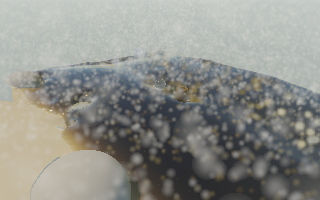

November 14, 2026 · live scene enabled; independent reference checkbox retained.
Busy scene: +6.1% FPS and simulation throughput. Exact compiled CPU grid work replaces repeated JavaScript face loops. The water model, surface markers, contacts, rendering, scene detail and 60 FPS cap stay unchanged. This is a modest complete-scene improvement, not a GPU simulation migration.
AMD Radeon Pro 560X / Metal, native Deno wgpu renderer, CPU physics. Fixed 640 × 400 output with a 320 × 200 scene target, 3,024 initial water markers, 3,553 pressure cells. All rendering passes and native controls execute; the final image is offscreen, so these measurements exclude the OS window compositor. They are not isolated render-pass or pressure timings, and they do not establish Windows/RTX performance.
Each workload uses four sequential 96-frame runs, with the first 16 frames discarded. Busy and rain use reference/batch/batch/reference order; calm uses the reverse. Rain is rate 600; busy/rain include 144 terrain edits, sea foam and wind 12. Physics is camera-independent.
| Workload | FPS: original → batch | Simulation speed | Change | p95 frame interval |
|---|---|---|---|---|
| busy | 5.92 → 6.28 | 0.789× → 0.837× | +6.1% | 193.1 → 180.6 ms |
| rain | 5.11 → 4.91 | 0.682× → 0.655× | -3.9% | 223.6 → 261.3 ms |
| calm | 5.54 → 6.40 | 0.738× → 0.853× | +15.6% | 244.4 → 186.3 ms |
Rain/calm uncertainty: standalone rain runs disagree (−11.8% then +5.4%), and calm has a slow, variable reference run. Their aggregate changes above are retained, not presented as reliable speedups. Other unchanged stages slowed during the anomalous rain run too; background competition is plausible, not proven.
One additional 160-frame run switches the same living scene between reference and batch. Warm-up: 32 frames. Two ABBA cycles of 16-frame blocks; omit the first two intervals of each block. Each path retains 56 intervals. This reduces between-process drift while retaining all rain and scene behavior; it does not eliminate every source of variation.
5.37 → 5.64 FPS; 0.715× → 0.752× realtime (+5.2%). p95 improves from 211.6 to 198.9 ms. Summary · Raw frames and path assignments.
The live-only grid adapter batches liquid-face extrapolation, air advection, wall forcing, viscosity, air-velocity extension and temperature/humidity transport in a bounded WebAssembly workspace. It caches fixed cell positions, retains f64 arithmetic and the original summation order, and copies results back to the existing CPU-owned fields. Exact SDF queries, moving-body/player feedback, particle scatter/gather, surface constraints, pressure and thermal ledgers retain their original contracts. No new GPU work, render allocations, camera-driven coarsening or delayed readback is added. The CPU workspace is 2.82 MiB at this setting.
In the repeated busy run, deposition/preparation drops 10.63 → 7.63 ms per step; air/scalar work drops 1.90 → 0.60 ms. Surface contacts (~5.6 ms), neighbors (~3.5 ms), particle transport (~3.0 ms), occupancy and topology remain substantial. These stages are the next profiling targets. Detailed reference CPU breakdown.
The numerical regression suite compares exact outputs through boundary cases, anisotropic grids, held/out-of-domain markers, empty and resizing particle sets, nonuniform heat/humidity, CFL substeps/guard, edits, moving cups, player, brush, rain, reset and toggles. The reference remains intact for historical test constructors and for the live checkbox; absent/invalid compiled kernels retain the original path.
A separate native check renders 24 fixed steps with glass, a rock cup, a carved beach, rain and wind. Every deposition matches an independent JavaScript grid exactly. Frozen image error is zero. The retained playback runs and this check report no GPU device loss or renderer failure. These bounded runs do not establish long-session stability. A separate incomplete windowed run was interrupted and excluded; see all exclusions and limitations.
Native numerical/image results · Native runtime report · All timing summaries

node src/rtx-sand-lab/fields/batch/build.mjs npm run build:native .native/tools/deno run --config native/deno.json --allow-read --allow-write=.native --allow-env --allow-sys --allow-ffi native/field-batch-bench.js reference busy headless-a # Run sequentially, never alongside another graphics workload. # Change reference to batch; repeat in reverse order. # Repeat rain and calm; use interleaved rain headless-abba for the within-run check. node tests/field-batch-report.mjs